Our History
1898
The year 1898 saw the establishment of the club as a result of the amalgamation of the Lakeside and United Rugby clubs. The colours that were maroon and white, and the oak leaf and two acorns as the emblem.
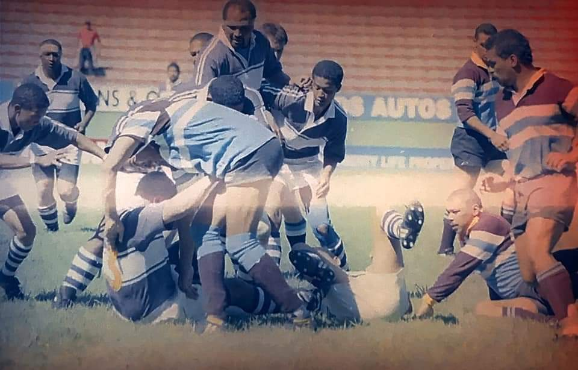
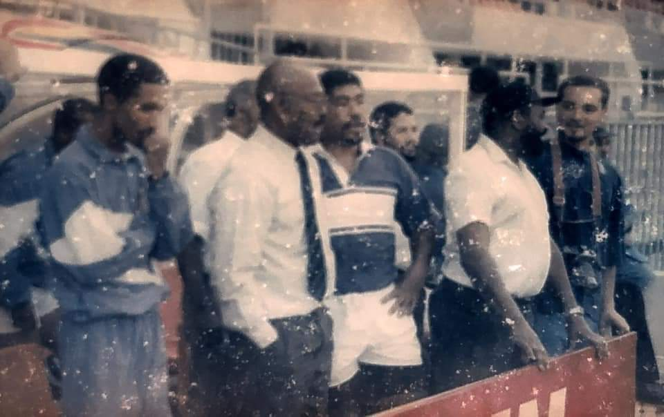
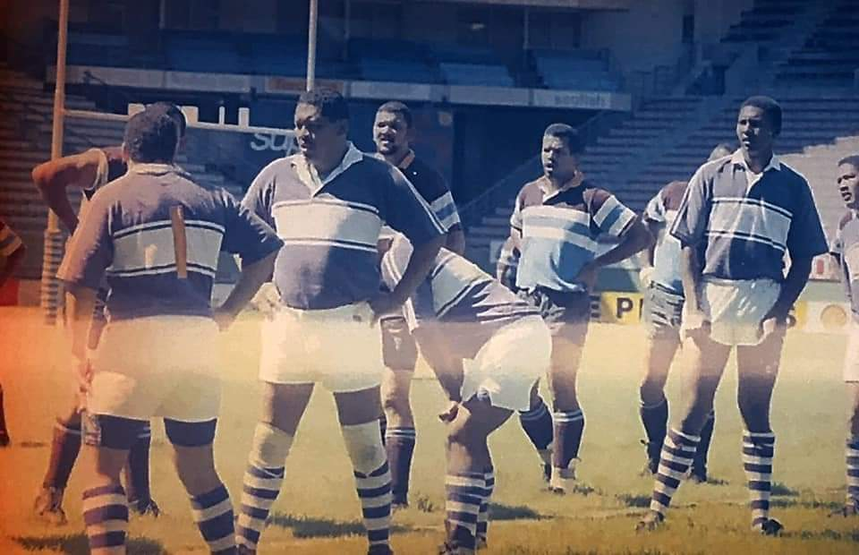
1921
The historic merger took place in the Dutch Reformed Church school hall near the site of the present Blue Route mall in Retreat. From 1898 to 1921 Retreat functioned as a social rugby playing club. The foundation families were the Collers, Asias, Kirstens, and Louws.
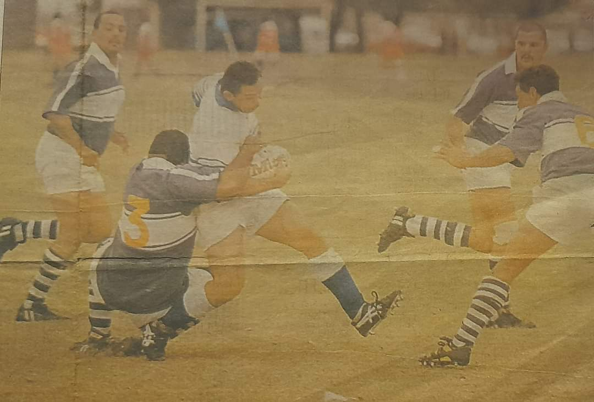
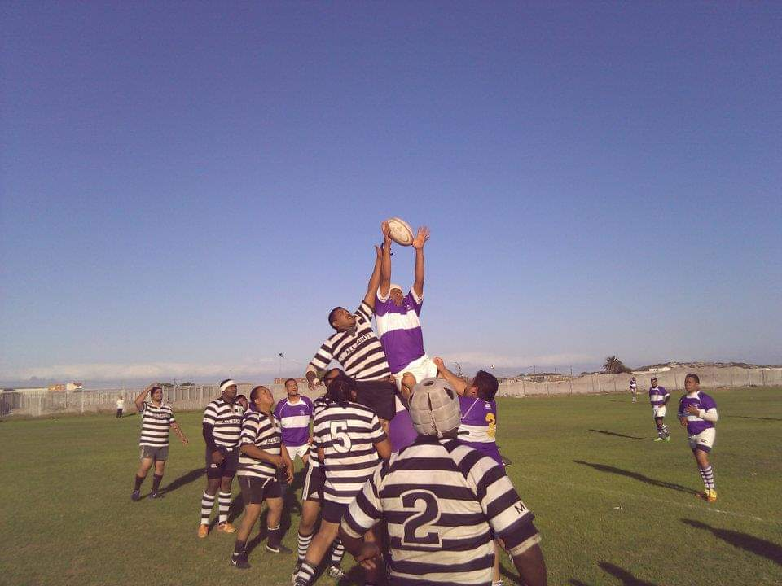
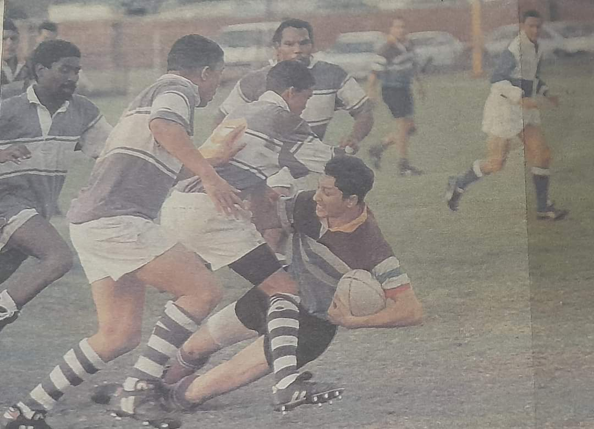
1922
In 1922 the club affilated to the Mowbray based City and Suburban RFU and it qualified for admission to the First Division by beating Primrose, and in 1924 the club won its first major trophy, the Commando Cup.
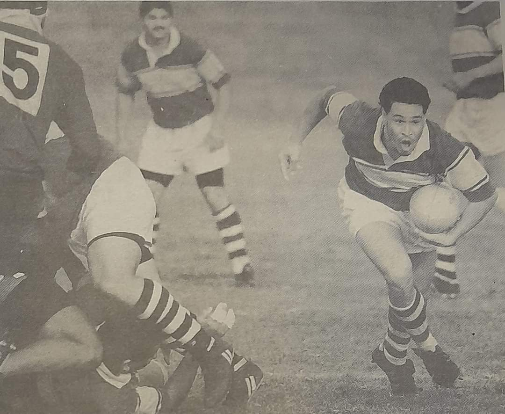
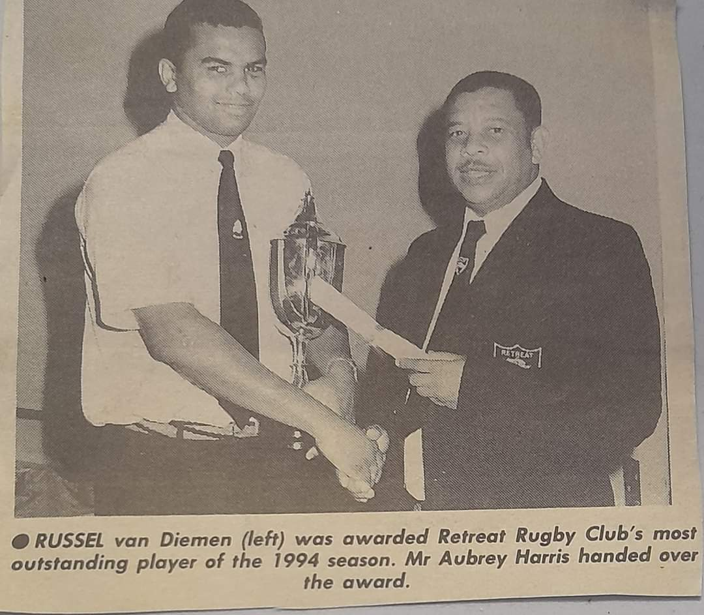
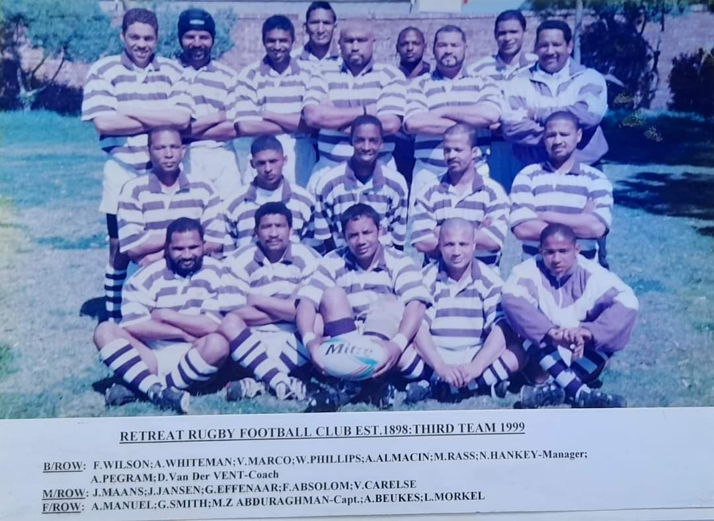
1920's
Sometime in the 1920's the famous purple and white colours were adopted, and in the post-war period the emblem, the gun, reminiscent of the First British Occupation of the Cape (1795), and the ensuing retreat of the Dutch forces facing the approach of the Red Coats along the route late known as Military Road.
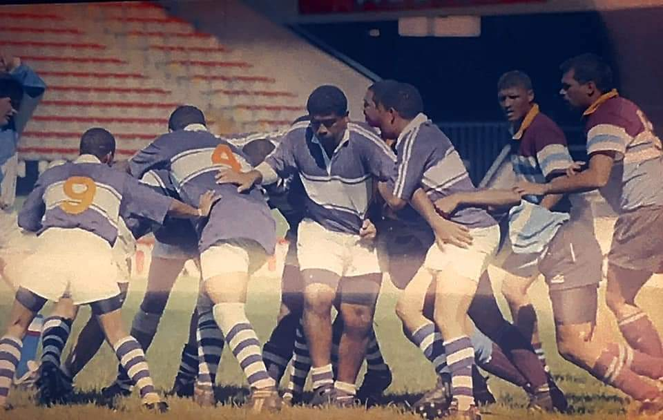
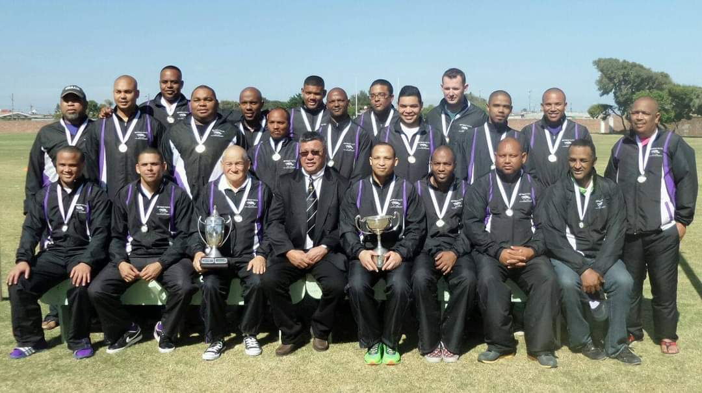
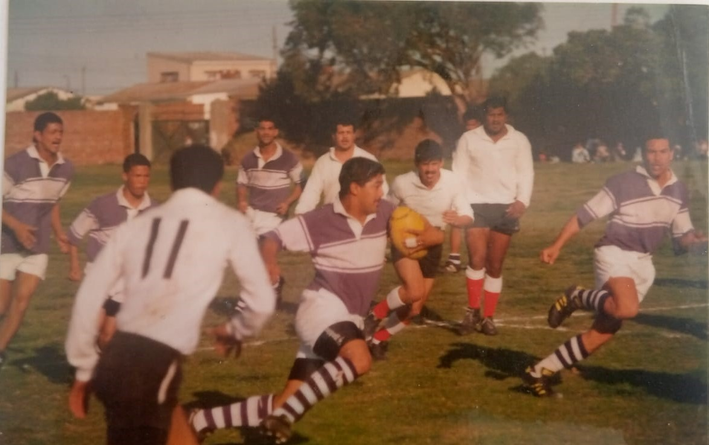
1936
In 1936 Retreat lost its Kalk bay - based players who had defected to Thistle RFC.
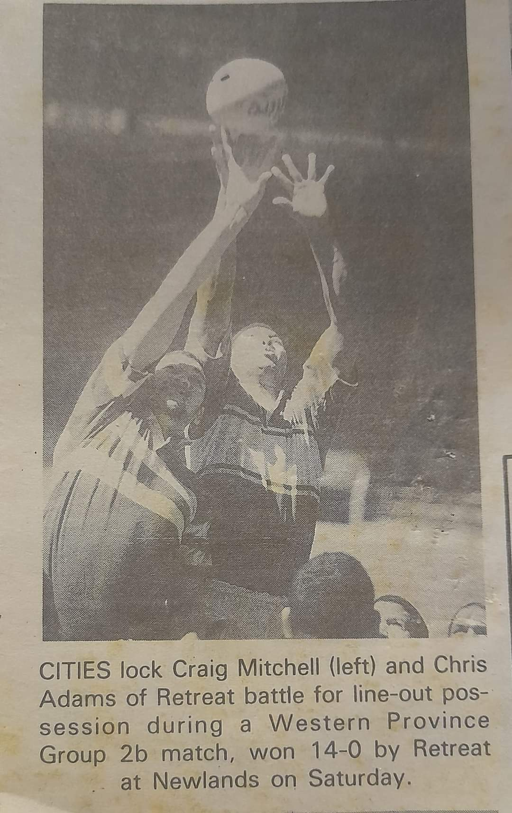
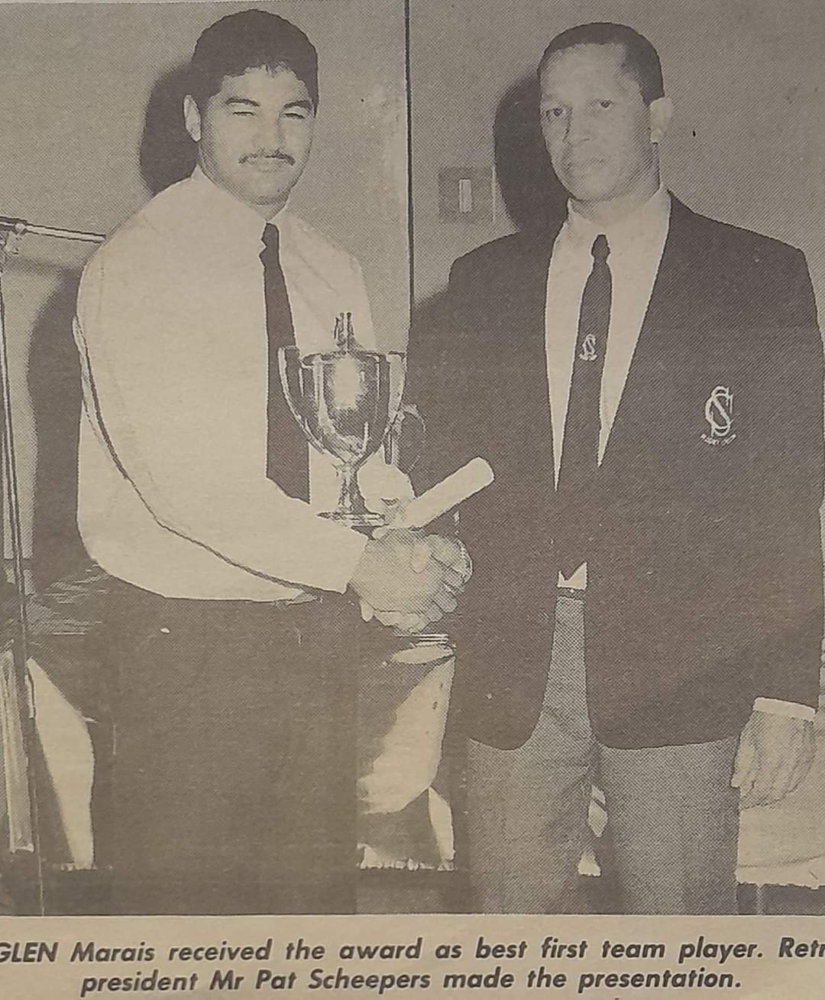
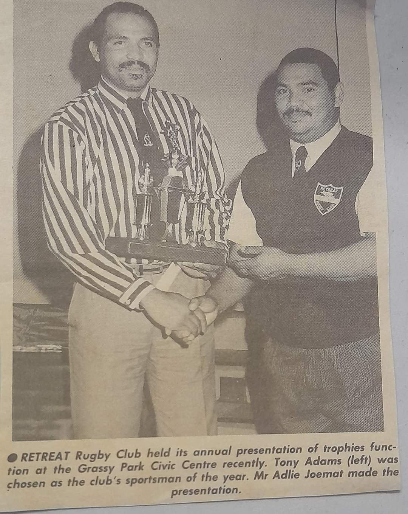